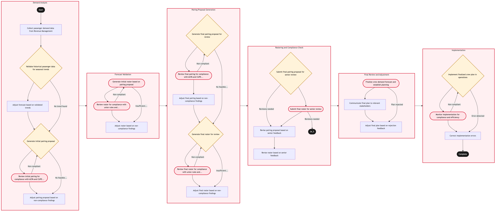

Updated 2026-08-21
Crew Demand Forecasting and Establishment Planning
Process flow
Click to zoom

Process steps
▼
Phase 1 — Demand Analysis
6 steps
| Step | Activity | Role | System | Input | Output | KPI | Dec | Exc | Pain point |
|---|---|---|---|---|---|---|---|---|---|
| 1.1 | Collect passenger demand data from Revenue Management | Revenue Analyst | Jeppesen CrewB | Monthly forecast data | Demand matrix by route and time period | Accuracy of demand data within ±5% | N | N | Inaccurate forecasts lead to over or under-staffing. |
| 1.2 | Validate historical passenger data for seasonal trends | Data Analyst | DayforceB | Historical passenger data | Seasonal adjustment factors | Consistency of seasonal adjustments over 3 months | Y | N | Incorrect seasonal adjustments can cause significant planning errors. |
| 1.3 | Adjust forecast based on validated trends | Revenue Analyst | Jeppesen CrewB | Demand matrix and seasonal adjustment factors | Adjusted demand matrix | Accuracy of adjusted forecasts within ±5% | N | N | Manual adjustments can introduce errors if not carefully done. |
| 1.4 | Generate initial pairing proposal | Crew Planning Specialist | Jeppesen CrewB | Adjusted demand matrix | Pairing proposal with tentative schedules | Number of pairings generated per hour | Y | N | Complex union rules can complicate the pairing process. |
| 1.5 | Review initial pairing for compliance with ACPA and CUPE agreements | ACPA/CUPE Compliance Officer | Jeppesen CrewB | Pairing proposal | Compliance report | Time to review compliance per proposal | N | Y | Non-compliant pairings can lead to labor disputes. |
| 1.6 | Adjust pairing proposal based on non-compliance findings | Crew Planning Specialist | Jeppesen CrewB | Compliance report | Revised pairing proposal | Number of adjustments per proposal | N | N | Multiple iterations can delay the planning process. |
▼
Phase 2 — Forecast Validation
3 steps
| Step | Activity | Role | System | Input | Output | KPI | Dec | Exc | Pain point |
|---|---|---|---|---|---|---|---|---|---|
| 2.1 | Generate initial roster based on pairing proposal | Crew Planning Specialist | DayforceB | Revised pairing proposal | Roster with tentative assignments | Time to generate initial roster | N | Y | Incorrect rostering can lead to understaffed flights. |
| 2.2 | Review roster for compliance with union rules and operational constraints | Union Compliance Officer | DayforceB | Roster | Compliance report | Time to review compliance per roster | N | Y | Non-compliant rosters can result in legal action. |
| 2.3 | Adjust roster based on non-compliance findings | Crew Planning Specialist | DayforceB | Compliance report | Revised roster | Number of adjustments per roster | N | N | Multiple iterations can delay the planning process. |
▼
Phase 3 — Pairing Proposal Generation
6 steps
| Step | Activity | Role | System | Input | Output | KPI | Dec | Exc | Pain point |
|---|---|---|---|---|---|---|---|---|---|
| 3.1 | Generate final pairing proposal for review | Crew Planning Specialist | Jeppesen CrewB | Revised roster | Final pairing proposal | Time to finalize pairings | Y | N | Complex union rules can complicate the finalization process. |
| 3.2 | Review final pairing for compliance with ACPA and CUPE agreements | ACPA/CUPE Compliance Officer | Jeppesen CrewB | Final pairing proposal | Compliance report | Time to review compliance per proposal | N | Y | Non-compliant pairings can lead to labor disputes. |
| 3.3 | Adjust final pairing based on non-compliance findings | Crew Planning Specialist | Jeppesen CrewB | Compliance report | Finalized pairing proposal | Number of adjustments per proposal | N | N | Multiple iterations can delay the planning process. |
| 3.4 | Generate final roster for review | Crew Planning Specialist | DayforceB | Finalized pairing proposal | Final roster with assignments | Time to finalize rosters | Y | N | Complex union rules can complicate the finalization process. |
| 3.5 | Review final roster for compliance with union rules and operational constraints | Union Compliance Officer | DayforceB | Final roster | Compliance report | Time to review compliance per roster | N | Y | Non-compliant rosters can result in legal action. |
| 3.6 | Adjust final roster based on non-compliance findings | Crew Planning Specialist | DayforceB | Compliance report | Finalized roster | Number of adjustments per roster | N | N | Multiple iterations can delay the planning process. |
▼
Phase 4 — Rostering and Compliance Check
4 steps
| Step | Activity | Role | System | Input | Output | KPI | Dec | Exc | Pain point |
|---|---|---|---|---|---|---|---|---|---|
| 4.1 | Submit final pairing proposal for senior review | Crew Planning Manager | Jeppesen CrewB | Finalized pairing proposal | Senior review report | Time to submit proposal for review | Y | N | Delays in senior review can cause last-minute changes. |
| 4.2 | Submit final roster for senior review | Crew Planning Manager | DayforceB | Finalized roster | Senior review report | Time to submit roster for review | N | Y | Delays in senior review can cause last-minute changes. |
| 4.3 | Revise pairing proposal based on senior feedback | Crew Planning Specialist | Jeppesen CrewB | Senior review report | Revised final pairing proposal | Number of revisions per proposal | N | N | Multiple iterations can delay the planning process. |
| 4.4 | Revise roster based on senior feedback | Crew Planning Specialist | DayforceB | Senior review report | Revised final roster | Number of revisions per roster | N | N | Multiple iterations can delay the planning process. |
▼
Phase 5 — Final Review and Adjustment
3 steps
| Step | Activity | Role | System | Input | Output | KPI | Dec | Exc | Pain point |
|---|---|---|---|---|---|---|---|---|---|
| 5.1 | Finalize crew demand forecast and establish planning | Crew Planning Director | Jeppesen Crew & DayforceU | Revised final pairing proposal and roster | Finalized crew plan | Time to finalize crew plan | N | Y | Implementation delays can cause operational disruptions. |
| 5.2 | Communicate final plan to relevant stakeholders | Crew Planning Director | DayforceB | Finalized crew plan | Communication report | Time to communicate plan | N | N | Miscommunication can lead to confusion and errors. |
| 5.3 | Adjust final plan based on rejection feedback | Crew Planning Director | Jeppesen Crew & DayforceU | Rejection feedback | Adjusted final crew plan | Number of adjustments per rejected plan | N | N | Multiple iterations can delay the planning process. |
▼
Phase 6 — Implementation
3 steps
| Step | Activity | Role | System | Input | Output | KPI | Dec | Exc | Pain point |
|---|---|---|---|---|---|---|---|---|---|
| 6.1 | Implement finalized crew plan in operations | Operations Control Duty Manager | Lufthansa Systems NetLineB | Adjusted final crew plan | Implemented crew plan | Time to implement plan | Y | N | Implementation errors can cause operational disruptions. |
| 6.2 | Monitor implementation for compliance and efficiency | Operations Control Analyst | Lufthansa Systems NetLineB | Implemented crew plan | Monitoring report | Number of compliance checks per day | N | Y | Non-compliance can lead to labor disputes. |
| 6.3 | Correct implementation errors | Operations Control Analyst | Lufthansa Systems NetLineB | Monitoring report | Corrected crew plan | Time to correct errors | N | N | Errors can cause operational delays and disruptions. |
Swim lanes
Revenue Analyst1.1 1.3
Data Analyst1.2
Crew Planning Specialist1.4 1.6 2.1 2.3 3.1 3.3 3.4 3.6 4.3 4.4
ACPA/CUPE Compliance Officer1.5 3.2
Union Compliance Officer2.2 3.5
Crew Planning Manager4.1 4.2
Crew Planning Director5.1 5.2 5.3
Operations Control Duty Manager6.1
Operations Control Analyst6.2 6.3
Systems touched
Jeppesen CrewBDayforceBJeppesen Crew & DayforceULufthansa Systems NetLineB
Key performance indicators
- Accuracy of demand data within ±5%
- Consistency of seasonal adjustments over 3 months
- Number of pairings generated per hour
- Time to generate initial roster
- Time to finalize crew plan
Risks and control points
- Inaccurate forecasts leading to over or under-staffing
- Complex union rules complicating the pairing process
- Non-compliant pairings and rosters resulting in legal action
- Multiple iterations delaying the planning process
- Implementation errors causing operational disruptions
Air Canada Process Wiki — process and systems reference compiled from public sources
for IT Application Management and User Support pre-sales discovery.
Built 2026-08-21. Every system carries an evidence tier: tier C is an industry pattern and tier U is an open
question, and neither should be asserted as fact about Air Canada without confirmation in discovery.
Not affiliated with or endorsed by Air Canada. Air Canada, Aeroplan and Altitude are trademarks of Air Canada.